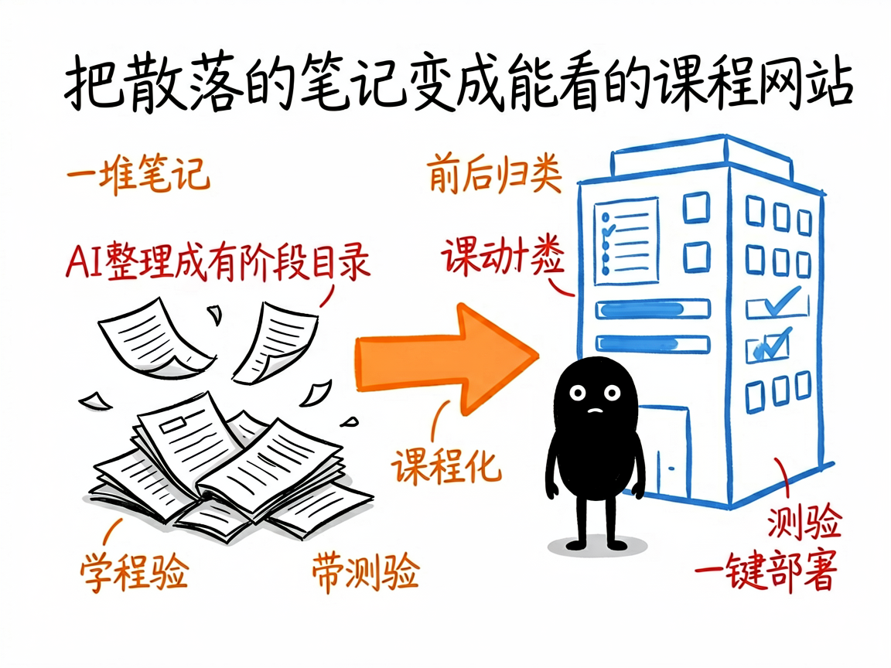
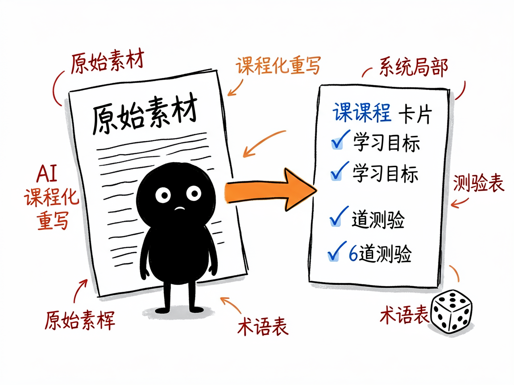

攒了一堆课程笔记却没地方展示？把它一键变成能看的课程网站 —— course-site-skill 介绍
你是不是手里有一堆 Markdown 格式的教程、笔记、课程素材，散在一个文件夹里，想分享给别人却只能发文件？别人打开是一堆 .md，根本不像个"网站"，没有目录、没有进度、没有测验，更别提手机上看了。
course-site-skill 就是来解决这件事的。
你给它一个装 .md 文件的文件夹，它还你一个完整、能直接部署的静态课程网站：有阶段和课程目录、每节课有学习目标和小结、还带测验题和进度追踪，整体是那种清爽的"蓝图风"设计。最关键的是，它不只是搬文件——AI 会把你那些杂乱的原始笔记，逐节"课程化"成规范的中文专业课。

它到底能做什么
- 自动分析你的 md 仓库，识别哪些是"阶段"、哪些是"课"，帮你理清结构（专业说法叫"结构分析"和"自动归类"）。
- 核心能力是"课程化"：AI 把抓来的博客式、随笔式原始内容，重写成规范课程格式——标题、学习目标、分章节正文、小结，而不是原样堆上去。
- 给每节课自动生成 6 道真实测验题（1 道预习 + 3 道理解 + 2 道总结），不依赖外部付费接口。
- 提炼全站术语表和"先修关系图"，让读者知道知识点之间的前后依赖。
- 支持品牌形象定制：改一个
.brand.json配置文件，全站的配色、标题、logo 一次换掉。 - 一键构建静态网站、本地预览，并部署到 EdgeOne / Pages / Vercel / GitHub Pages 等任意静态空间。
一个具体例子
纯命令行也能跑（不需要会调 AI）：
# 1. 分析你的 md 仓库，生成 phases/ 目录结构 + 占位测验
python bin/init.py /path/to/md-repo ./out
# 2. 注入品牌、生成 data.js 等
python bin/build.py ./out
# 3. 本地预览（默认 8000 端口）
python bin/serve.py ./out 8000
# 4. 部署（例如推到 EdgeOne）
python bin/deploy.py ./out edgeone
如果在 AI Agent（如 Claude、WorkBuddy）里用，你只要说"用 course-site-skill 基于 ~/我的笔记 生成一个网站"，它会自己走完扫描、课程化、出测验、构建、预览全流程。

谁适合用
- 做课、写教程、整理学习资料的人，想有个正经网站展示内容。
- 团队/社区想把内部知识库变成可浏览的课程门户。
- 知识博主，把公众号/博客长文整理成体系化课程。
- 开发者，直接复用它的模板和脚本搭课程站。
一点说明 / 小提示
它做的是"静态网站"——没有登录、没有评论、没有后台，进度只存在浏览器本地。它不做多语言切换，课程统一生成中文（这点要特别注意）。另外它是给"会调 AI Agent 或会用命令行的人"用的 skill/工具集，不是双击即用的傻瓜软件；课程质量取决于你给的原始素材，AI 会重写但不凭空编造知识点。具体能力以项目 SKILL.md / README.md 为准。